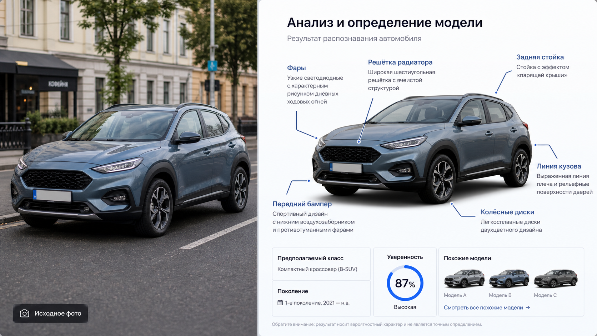

Промтзилла
Нейросеть может быстро разобрать автомобиль по фарам, решётке, силуэту, кузову и деталям салона, особенно если фото сделано с нескольких ракурсов.

Пошаговая инструкция
- 1Выбери фото автомобиля спереди или сзади под углом; для точности добавь боковой ракурс и салон.
- 2Загрузи снимок в инструмент определения марки машины по фото.
- 3Вставь промт и попроси объяснить признаки, а не только назвать модель.
- 4Если логотип закрыт, попроси ИИ работать по форме фар, кузова и решётки.
- 5Проверь год и поколение по каталогам, если планируешь покупку или оценку.
Пример результата
На обложке показан типичный сценарий: слева обычное исходное фото, справа результат, который можно получить после анализа через инструмент определения марки машины по фото.
Промт
RU
Определи автомобиль на фото. Сделай структурированный разбор: — вероятная марка; — вероятная модель; — поколение или примерный период выпуска; — тип кузова; — видимые признаки комплектации; — уровень уверенности; — признаки, на которых основан вывод: эмблема, фары, решётка радиатора, задние фонари, линия кузова, диски, салон; — похожие модели, с которыми можно перепутать; — какие дополнительные ракурсы нужны для уточнения. Если логотип не виден или машина похожа на несколько моделей, честно укажи альтернативы. Не определяй владельца, номер или персональные данные.
EN
Identify the car in the photo. Give a structured analysis: — probable make; — probable model; — generation or approximate production period; — body type; — visible trim features; — confidence level; — clues used: emblem, headlights, grille, taillights, body line, wheels, interior; — similar models it may be confused with; — what extra angles are needed for clarification. If the logo is not visible or the car resembles several models, clearly list alternatives. Do not identify the owner, license plate, or personal data.
Важно
Результат по фото не подходит для юридической идентификации автомобиля. Номера, VIN и данные владельца обрабатывать не нужно.
Теги